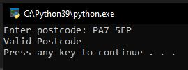
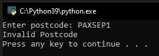

Programming language concepts
Discuss ReDOS and 'Evil Regex'
Question 1
What is ReDOS and what part do ‘Evil Regex’ play?
ReDOS (Regular Expression Denial of Service) is an exploitation of regular expresion through a Denial of Service attack resulting in overloading software and causing performance issues or hung states. Weidman (n.d.) explains Evil Regex by defining it as crafted input to run against a regex pattern. This definition is simplistic in nature as Evil Regex is a very powerful way of applying a DoS attack. By exploiting something as simple as a regex pattern that has been structured poorly or incorrectly Evil Regex becomes very powerful. Therefore the use of Evil Regex and tools like EGRET (Larson & Kirk 2016) to test and identify even a subset of potential regex patterns highlights the potential risks to software and the potential addition of wider surface attacks.
Question 2
What are the common problems associated with the use of regex? How can these be mitigated?
One of the main problems associated with regex is the ability to write expressions that are too simplistic and in turn accept too many strings which can often be associated with programmer error. Additionally many developers find the challenge of building regular expressions complex and difficult especially when defining the problem they are trying to solve. (Michael 2019) discusses the difficulty programmers face when working with regex. These problems typically fall under understanding structure, syntax, usability and testing. To mitigate the problems identified here one could consider a number of factors. This could include professional development and more targeted training and understanding of coding practices. Furthermore, considering usability by having a lower level of cyclomatic complexity or a reusable and tested library of well structured and tested regex patterns would also be a consideration.
Question 3
How and why could regex be used as part of a security solution?
One would assume the subject of security or a security solution/module would involve the securing of credentials. A use case to be considered for regex would be well defined patterns for user ID's, email addresses, alphanumeric values. If a well defined pattern was in place with a combination of built in functions like len to limit the length of a string. If an application was to generate a user id when an account is created you could apply regex to subsequent logins using user id to look for a specific pattern. Additionally, if an email address was to be used you could not only build well structured patterns of an email address but combine that with checks against database records for a matching email address offering 2 levels of verification that an email address was valid. There could be many other examples where regex would be applicable to building a secure solution but as discussed the challenge remains. What problem am i solving? Is regex applicable? Do i understand regex well enough and has it been done before?
References:
Weidman, A (n.d.) Regular expression Denial of Service - ReDoS Avaialble from https://owasp.org/www-community/attacks/Regular_expression_Denial_of_Service_-_ReDoS [Accessed on 30/08/2023]
Larson, E. and Kirk, A. (2016) April. Generating evil test strings for regular expressions. In 2016 IEEE International Conference on Software Testing, Verification and Validation (ICST) 309-319. IEEE.
Michael IV, L.G. (2019) Exploring the Process and Challenges of Programming with Regular Expressions (Doctoral dissertation, Virginia Tech).
Programming language concepts - Seminar activitites
Recursion - Towers of Hanoi
The Towers of Hanoi is a common mathematical puzzle used for problem solving and critical thinking. (Cormen & Balkcom n.d.) discuss the theory behind the problem as well as supplying a detailed somewhat complex set of code to simulate the Towers of Hanoi and do give some minimal information. However the code that they have suplied in this example is very complex and further research leads to a wide range of solutions written in Python that heavily simplify the code. When looking at the solution key considerations include the number of disks that a program could simulate without error as well as the number of iterations. Whilst writing a program or using an alternative source for code to use as a reference it is apparent that not all those who write code to answer this challenge consider these challenges. If you follow the myth of the Towers of Hanoi - the end of the world! - then the theoretical number of disk would be 64. By applying the formula of 2n - 1 then applying the same formaul with n = 64 from a real world perspective would take in the region of 580 billion years if that was based on it taking a second to move each disk. Even a program simulating moving a disk every 01.2 seconds would still fall into a loop that would in theory never end in our lifetime.
With this in mind the implications and risks to system security are huge. If a piece of siftware was using a similar function to Towers of Hanoi if coded incorrectly software could be susceptible to an injection of numerical values that could form part of the calculation therefore resulting in a DoS attack to bring down a system. Or even an internal function if not written correctly could massively impact performance.
Regex - UK Postcode
In regards to the summative assignment and the subject the team chose and in fact all online retail sites the checking or verification of postcodes or area codes is probably well underestimated. By offering delivery services ensuring a user enters a valid postcode for delivery purposes improves accuracy for logistics firms and companies to deliver product correctly.The issues is the complexity on the building of a valid regex to verify postcodes. The potential to write a malformed or incorrect regex is a risk if choosing to implement this in software. One possible way to ensure a solution is not subject to an evil regex attack would be to use a verified already existing regex from an existing library. This could be re-usable code within your organisation or from a recognised body where solid and well written regex is supplied already therefore not having to re-create.



References:
The UK Postcode Format Available from https://ideal-postcodes.co.uk/guides/uk-postcode-format [Accessed on 31/08/2023]
Cormen & Balkcom (n.d.) Towers of Hanoi with "counter" in python Avaialble from https://www.khanacademy.org/computing/computer-science/algorithms/towers-of-hanoi/a/towers-of-hanoi [Accessed on 31/08/203]
Towers of Hanoi with "counter" in python - Avaialble from https://stackoverflow.com/questions/21876214/towers-of-hanoi-with-counter-in-python [Accessed on 31/08/23]
A UK Postcode Validation Script In Python Avaialble from https://kodey.co.uk/2020/09/03/a-uk-postcode-validation-script-in-python/ [Accessed on 31/08/23]
Towers of Hanoi Avaialble from https://en.wikipedia.org/wiki/Tower_of_Hanoi [Accessed on 30/08/23]
Pearce A. (2015) Validating UK Postcodes Avaialble from https://www.andy-pearce.com/blog/posts/2015/Aug/validating-uk-postcodes/ [Accessed on 31/08/23]